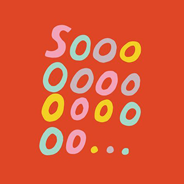
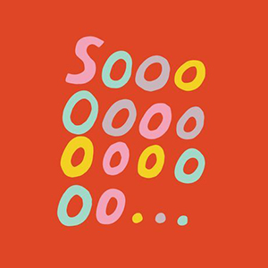

es.pi.ral da ver.da.de
subs. fem.
1. é a sensação de caos e confusão que destrói as antigas certezas e convicções dos indivíduos sobre o mundo.


Se você:
- É bombardeado com informação a todo momento;
- Não sabe se acredita no amigo, no jornal, no professor ou no vídeo do WhatsApp;
- Fica pressionado a ter uma opinião e, quando finalmente se decide, surge outra polêmica
 


Você caiu na espiral da verdade!
Assista o que os especialistas tem a dizer: